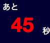

このサーバーの細かなルールを紹介します。
※初日犠牲者: 初日に襲撃されたプレイヤーが、ゲームにほとんど参加できずに脱落してしまうという状況を防ぐためにシステムが用意する、ダミーのプレイヤー。
時間について
夕方・明け方は時間固定制になっています。(どちらもオプションで解除可能)
時間固定制では、全員が投票・能力実行を終えても、残り時間が0秒にならない限り次のフェーズに移りません。
夕方の時間固定を解除した場合、全員の投票が終わった時点で、残り時間に関係なく夜になります。
明け方の時間固定を解除した場合、人狼の襲撃は明け方の時間が半分以上経過すると可能になります。(占い師・狩人は明け方であればいつでも可能です)
人狼の襲撃が実行できない間、残り時間は赤色で表示されます

人狼の襲撃が実行されると、残り時間に関係なく昼になります。
投票について
投票先は時間内ならば何度でも変更可能です。
時間内に投票をしなかったプレイヤーは突然死します。
再投票となった場合、投票状態はリセットされます。再度投票先を決定してください。
未投票による突然死があった場合、投票済みのプレイヤーの投票先は公開されますが、再投票になります。
明け方について
人狼の襲撃先・狩人の護衛先は、時間内ならば何度でも変更可能です。
占い師・狩人は、時間内に能力を実行しなくても突然死はありません。しかし、村人陣営は非常に不利になってしまうでしょう。
襲撃について
襲撃先指定は、生存している人狼であれば誰でも可能です。人狼全員の中で、最後に指定された襲撃先が実行対象となります。
襲撃先を指定する度にシステムメッセージがログに流れます。(これは全プレイヤーに見えます)
人狼は1日目以外で、時間内に襲撃先を1度も指定しなかった場合、ペナルティとしてランダムに1人死亡します。
死亡の発覚は翌日の昼開始時で、襲撃結果と区別できいない形で公開されます。
1日目は、襲撃先を指定しなくても自動で「初日犠牲者」を襲撃します。また、1日目の襲撃先は必ず「初日犠牲者」となります。